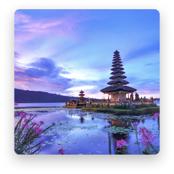

Siapa pun tak ada yang bisa menyangkal keindahan yang ditawarkan Pulau Dewata. Baru-baru ini, Bali didapuk menjadi destinasi paling populer di dunia versi Tripadvisor Travellers’ Choice tahun 2021.
Kemana Kita Akan Pergi Selanjutnya?
(3A Tours & Travel), merupakan agen/biro wisata perjalanan yang didirikan pada tahun 2021. Kami terdiri dari profesional yang memiliki pengalaman dibidang pariwisata maupun penerbangan. Saat ini kami melayani Paket Perjalanan Tour ke Kota Besar di Indonesia.
Pilih Kategori Tujuan Yang Anda Inginkan !


Ada banyak aktivitas seru di Labuan Bajo, surga di Nusa Tenggara Timur yang bisa kamu eksplor selama liburan.Destinasi populer dengan keindahan alam yang memesona ini memang menyimpan banyak hal menarik.

Raja Ampat adalah alam mimpi yang keindahannya tak terbantahkan. Terdiri dari lebih dari 1500 pulau tak jauh dari Sorong, Kepulauan Raja Ampat menyajikan pemandangan dunia lain dari pulau-pulau.

Posisinya di ujung paling barat kepulauan Indonesia telah menjadikan kota Banda Aceh sebagai titik transit. Anda diajak untuk mempelajari sisa-sisa kemegahan zaman keemasan Aceh Darussalam yang sangat bernilai spiritual bagi bangsa.